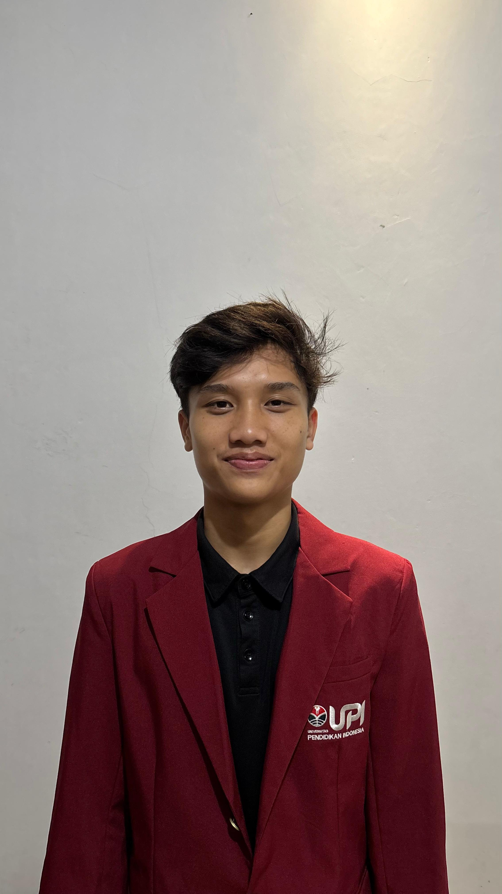

Saat ini aku sedang menempuh pendidikan semester 5 di program studi Teknik Logistik. Fokus studi yang aku pelajari meliputi manajemen rantai pasok (supply chain), pergudangan, sistem transportasi, dan digitalisasi logistik.
Kamu bisa liat repositori proyek ini langsung di Profil GitHub Aku.